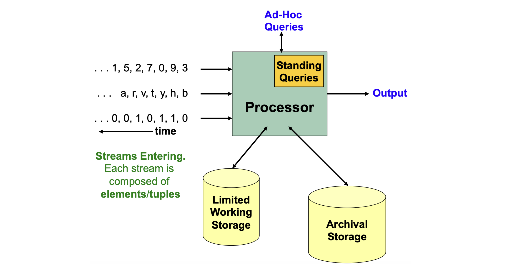
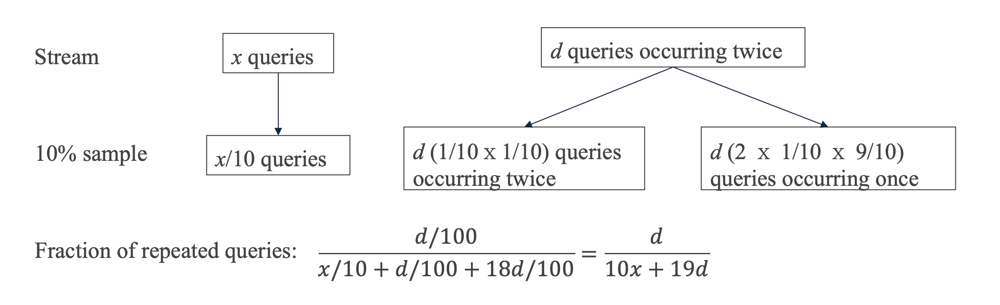
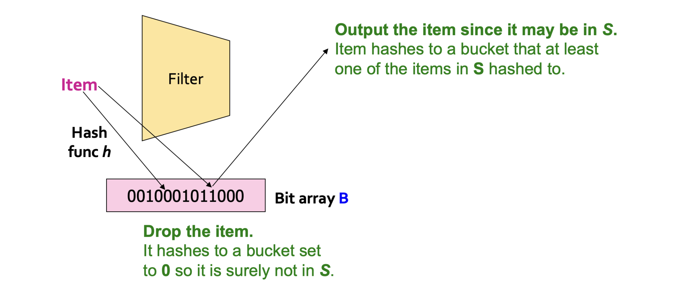
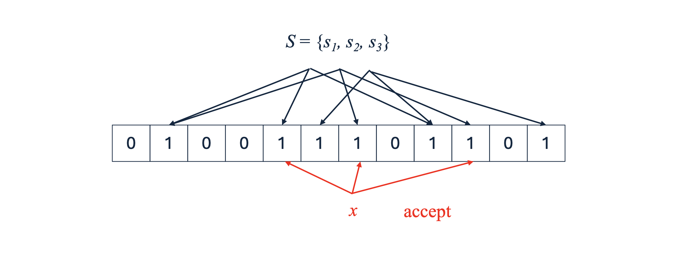
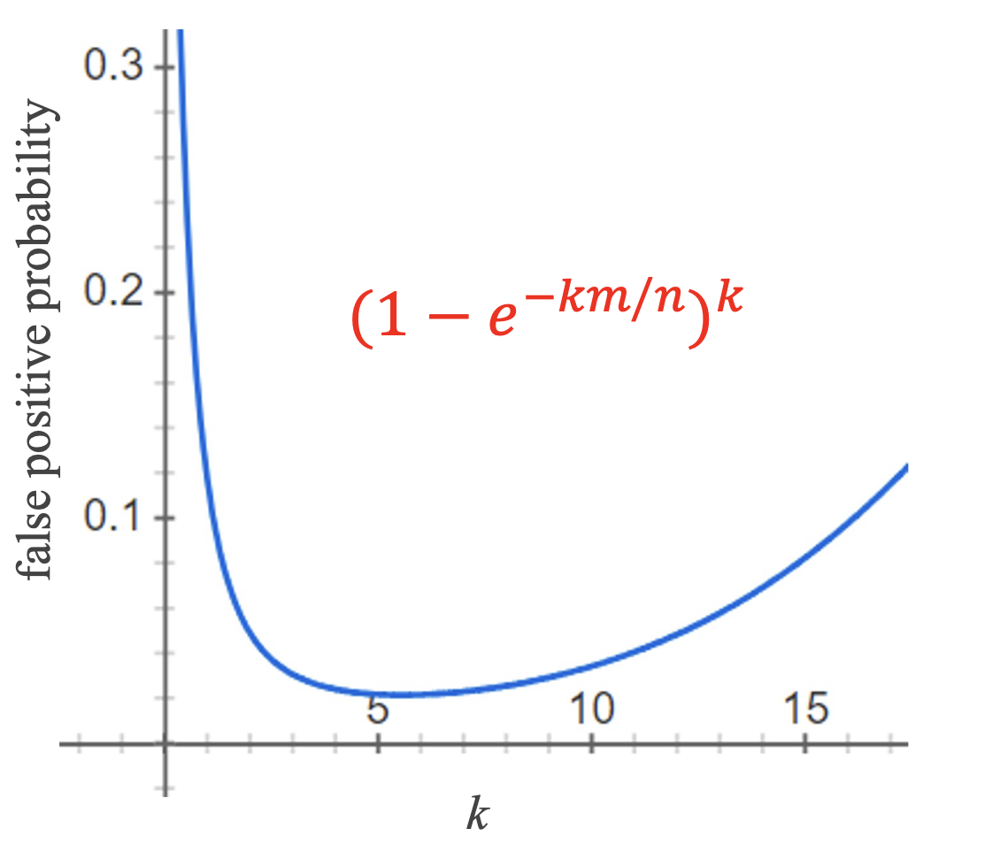

들어가며
지금까지 우리는 관측값의 순서가 있는 시계열(time series) 데이터를 다루어 왔습니다. 시계열 분석에서는 전체 데이터를 미리 메모리에 올려놓고 분석할 수 있다고 암묵적으로 가정합니다. 그런데 현실에서는 이 가정이 성립하지 않는 훨씬 더 도전적인 형태의 순차 데이터가 존재합니다. 바로 데이터 스트림(data stream) 입니다.
이번 포스트에서는 다음 세 가지 주제를 차례로 살펴보겠습니다.
- 데이터 스트림: 개념, 특성, 처리 모델
- 스트림에서의 샘플링: 고정 비율 샘플링의 함정과 Reservoir Sampling의 정확성 보장
- 스트림 필터링: Bloom Filter의 동작 원리와 False Positive Rate 최소화 전략
특히 Reservoir Sampling과 Bloom Filter는 데이터 공학 및 분산 시스템에서도 폭넓게 활용되는 핵심 알고리즘이므로, 직관적 설명과 수학적 증명까지 꼼꼼히 정리해 보겠습니다.
이전 강의 리캡
이번 강의는 아래 세 가지 주제를 다룬 이전 강의에 이어집니다.
- 순환 신경망 (Recurrent Neural Network, RNN): 은닉 상태 \(h_t\)가 이전 시점의 상태 \(h_{t-1}\)과 현재 입력 \(x_t\)를 함께 반영합니다. 구체적으로 \(h_t = \sigma(\theta_0 h_{t-1} + \theta_1 x_t)\), \(z_t = \sigma(\theta h_t)\) 형태를 가집니다.
- 확률론적 예측 (Probabilistic Forecasting): 미래 값의 점 추정 대신 분포를 통해 불확실성을 정량화합니다.
- 최대 우도 추정 (Maximum Likelihood Estimation, MLE): 관측 데이터의 로그 우도를 최대화하여 분포 파라미터를 추정합니다.
1. 데이터 스트림 (Data Streams)
1.1 데이터 스트림이란?
시계열 데이터와 달리, 데이터 스트림은 다음과 같은 근본적인 특성을 가집니다.
- 데이터 원소(element)가 한 번에 하나씩, 무한히(infinitely) 도착합니다.
- 전체 데이터를 미리 알 수 없습니다(unknown total length).
- 데이터의 총량이 매우 크기 때문에 전부 저장하는 것이 현실적으로 불가능합니다.
- 데이터가 빠른 속도로 도착하며, 즉시 처리하지 않으면 유실됩니다.
이러한 특성 때문에 고전적인 일괄 처리(batch processing) 방식을 그대로 적용하기 어렵습니다. 스트림 마이닝에서는 제한된 메모리와 선형 시간(linear time) 안에서 계산이 이루어져야 한다는 강한 제약이 있습니다.
1.2 데이터 스트림의 예시
실세계에서 스트림 형태로 발생하는 데이터의 대표적인 예시는 다음 세 가지입니다.
- 센서 데이터 (Sensor Data): 해양 부이(buoy)나 기상 센서가 매일 수집하여 전송하는 수온·기압 등의 데이터.
- 이미지 데이터 (Image Data): 감시 카메라(CCTV)가 하루에도 수많은 프레임을 연속으로 생산하는 영상 스트림.
- 인터넷 및 웹 트래픽 (Internet/Web Traffic): 네트워크 노드가 끊임없이 수신하는 IP 패킷의 스트림.
1.3 스트림 마이닝 (Stream Mining)
스트림 환경에서는 다음과 같은 구조적 제약이 존재합니다.
- 입력 원소는 빠른 속도로 연속 도착합니다.
- 각 원소는 숫자뿐만 아니라 임의의 튜플(tuple) 이 될 수 있습니다.
- 시스템은 전체 스트림을 쉽게 접근 가능한 형태로 저장할 수 없습니다. 아카이브 스토리지에는 기록이 가능하지만, 빠른 랜덤 접근·분석이 어렵습니다.
핵심 질문: 이렇게 제한된 메모리 환경에서 스트림에 관한 중요한 통계치를 어떻게 계산할 수 있을까요?
→ 제한된 메모리 사용, 선형 시간 내에서 동작하는 알고리즘 설계가 핵심입니다.
스트림 마이닝의 응용 분야
| 응용 분야 | 구체적 내용 |
|---|---|
| 쿼리 스트림 마이닝 | Google이 오늘 가장 많이 검색된 쿼리를 실시간으로 파악 |
| 클릭 스트림 마이닝 | Wikipedia에서 조회 수가 급증하는 페이지를 실시간으로 모니터링 |
| 소셜 네트워크 피드 마이닝 | Twitter/Facebook에서 트렌딩 토픽(trending topic)을 탐지 |
1.4 스트림 처리 모델 (Stream Processing Model)
스트림 처리 시스템의 전체 구조는 아래 그림에 요약되어 있습니다.

1, 5, 2, 7, ...), 문자 시퀀스(a, r, v, t, ...), 이진 비트 스트림(0, 0, 1, 0, ...) 등 다양한 형태의 데이터 스트림이 왼쪽에서 프로세서(Processor) 로 유입됩니다. 프로세서 내부에는 미리 등록되어 지속적으로 처리되는 상시 쿼리(Standing Queries, 주황색 박스) 가 있으며, 외부에서 임의 시점에 들어오는 애드혹 쿼리(Ad-Hoc Queries, 파란색) 도 처리합니다. 프로세서는 두 종류의 저장소에 접근합니다: 빠른 분석을 위한 작은 용량의 제한된 작업 저장소(Limited Working Storage) 와, 대용량이지만 접근이 느린 아카이브 저장소(Archival Storage). 이 모델에서 핵심 병목은 Working Storage의 용량 제약이며, 이를 극복하기 위해 근사(approximation) 및 요약(summarization) 기법이 필요합니다.이 모델에서 핵심 포인트는 Working Storage의 용량 한계입니다. 전체 스트림을 메모리에 올릴 수 없으므로, 모든 스트림 알고리즘은 필연적으로 요약 또는 근사를 동반합니다.
1.5 사이드 노트: 온라인 러닝 (Online Learning)
스트림 환경에서의 머신러닝 모델 학습은 온라인 러닝(online learning) 이라 불립니다.
- 목표: 데이터의 분포 변화(distribution shift)에 모델이 천천히 적응하는 것.
- 핵심 아이디어: 전체 데이터를 재학습하는 대신, 새로운 원소가 도착할 때마다 작은 업데이트(small gradient update) 를 수행합니다. 이는 오래된 예시를 자연스럽게 “잊어가는(forgetting)” 효과를 줍니다.
- 구체적 방법:
- 소량의 초기 훈련 데이터로 분류기(classifier)를 먼저 학습합니다.
- 스트림에서 새 원소가 도착할 때마다 SGD와 유사한 방식으로 모델을 소폭 업데이트합니다.
2. 스트림에서의 샘플링 (Sampling from a Stream)
2.1 왜 샘플링이 필요한가?
스트림 샘플링이 필요한 두 가지 근본 이유가 있습니다.
- 메모리 제약: 전체 스트림을 메인 메모리에 저장할 수 없습니다.
- 알고리즘 효율성: 좋은 샘플이 있다면, 전체 스트림을 분석하는 것보다 훨씬 효율적인 알고리즘을 설계할 수 있습니다.
스트림 샘플링에는 크게 두 가지 접근법이 있습니다.
- 접근 1: 스트림 원소 중 고정된 비율(fixed proportion) 을 샘플링 (예: 10%)
- 접근 2: 무한 스트림 위에서 고정된 크기(fixed size) 의 랜덤 샘플을 유지
2.2 접근 1: 고정 비율 샘플링 (Sampling a Fixed Proportion)
나이브 알고리즘
스트림 원소의 10%를 샘플링하는 가장 단순한 방법은 다음과 같습니다.
- 각 원소마다 \(\{0, 1, \ldots, 9\}\) 중 하나를 무작위로 생성합니다.
- 생성된 숫자가 \(0\)이면 원소를 저장(store), 그렇지 않으면 버립니다(discard).
한계:
- 스트림이 계속 들어올수록 샘플의 크기가 무한히 증가합니다.
- 특정 응용에서 편향된(biased) 추정값을 제공합니다. 아래 예시에서 자세히 살펴보겠습니다.
나이브 방법의 한계: 검색 엔진 쿼리 스트림 예시
검색 엔진 쿼리 스트림을 예시로 나이브 방법의 문제를 분석합니다.
- 데이터: 튜플 \((\text{user},\ \text{query},\ \text{time})\)의 스트림.
- 질문: 중복 쿼리(같은 쿼리가 두 번 이상 등장하는 경우)의 비율은 얼마인가?
가정: 어떤 사용자들은 \(x\)개의 쿼리를 딱 한 번씩만 입력하고, 다른 사용자들은 \(d\)개의 쿼리를 정확히 두 번씩 입력한다고 합시다.
- 전체 쿼리 인스턴스 수: \(x + 2d\)
- 올바른 정답: 중복 쿼리의 비율 \(= \dfrac{d}{x + d}\)
나이브 1/10 샘플링의 수학적 오류
나이브하게 각 원소를 독립적으로 \(1/10\) 확률로 샘플링하면 어떤 일이 일어날까요?
- 단발성 쿼리 \(x\)개 → 샘플에 \(x/10\)개 포함됩니다.
- 두 번 등장하는 쿼리 \(d\)개는 다음 세 경우로 나뉩니다:
- 두 번 모두 샘플링될 확률: \(\frac{1}{10} \times \frac{1}{10} = \frac{1}{100}\) → 샘플에 중복 형태로 \(d/100\)개
- 첫 번째만 샘플링될 확률: \(\frac{1}{10} \times \frac{9}{10} = \frac{9}{100}\) → 단발성으로 \(9d/100\)개
- 두 번째만 샘플링될 확률: \(\frac{9}{10} \times \frac{1}{10} = \frac{9}{100}\) → 단발성으로 \(9d/100\)개

따라서 샘플에서 계산되는 중복 쿼리의 비율은 다음과 같습니다.
\[\text{샘플에서의 중복 비율} = \frac{d/100}{x/10 + d/100 + 18d/100} = \frac{d/100}{x/10 + 19d/100} = \frac{d}{10x + 19d}\]
올바른 정답 \(d/(x+d)\)와 비교하면, 이 추정치는 중복 비율을 심각하게 과소 추정(underestimate) 합니다.
왜? 두 번 나타나는 쿼리 쌍이 둘 다 샘플에 포함될 확률은 \(1/100\)으로 쌍의 존재 자체가 감지되기 어렵지만, 분모에는 그 쌍에서 비롯된 원소가 \(18d/100\)개나 단발성으로 들어오기 때문입니다.
핵심 문제: 나이브한 균등 샘플링은 쿼리 인스턴스 단위로 독립 처리하기 때문에, 동일 사용자의 쿼리 쌍을 함께 유지하지 못합니다.
해결책: 사용자(User) 기반 샘플링
핵심 통찰: 쿼리 단위로 샘플링하지 말고, 사용자 단위로 샘플링하면 됩니다.
- 전체 사용자 중 \(1/10\)을 선택하고, 선택된 사용자의 모든 쿼리를 샘플에 포함시킵니다.
- 구현: 사용자 ID 또는 사용자명을 키(key)로 하는 해시 함수 \(h\)를 사용하여 \(\{0, \ldots, 9\}\) 버킷 중 하나에 배정하고, 버킷 \(0\)에 배정된 사용자만 선택합니다.
- 가정: 해시 함수가 사용자를 균등 분포시킨다면, 정확히 \(1/10\)의 사용자가 선택됩니다.
이 방식을 사용하면, 선택된 사용자의 쿼리는 그 사용자에 관한 한 완전한 정보(complete picture) 를 가지므로, 중복 쿼리 비율 추정이 올바르게 이루어집니다.
일반화된 해결책: 키(Key) 기반 샘플링
이 아이디어를 더 일반적으로 표현하면 다음과 같습니다.
- 각 튜플의 특정 키(key) 를 기준으로 샘플링합니다.
- 키는 응용 도메인에 따라 결정됩니다. 예: \((\text{user},\ \text{search},\ \text{time})\) 튜플에서 \(\text{user}\)가 키.
- 동일한 키를 가진 모든 튜플이 함께 샘플에 포함되거나 제외됩니다.
한계: 특정 키 값은 시스템에서 영원히 샘플링되지 않을 수 있어, 해당 사용자들의 정보가 완전히 누락될 수 있습니다. 이것이 공정하고 좋은 샘플인지는 응용에 따라 다르게 판단해야 합니다.
2.3 접근 2: 고정 크기 샘플 유지 (Maintaining a Fixed-Size Sample)
고정 비율 샘플링의 또 다른 문제는 샘플 크기가 계속 증가한다는 점입니다. 스트림이 무한히 이어지면 결국 메모리가 고갈됩니다. 따라서 샘플의 최대 크기 \(s\)를 고정해야 합니다.
- 스트림의 길이를 사전에 알 수 없습니다.
- 메인 저장소의 크기는 제한되어 있습니다.
- 고정 비율 샘플링은 더 많은 데이터가 쌓일수록 저장소가 부족해집니다.
목표: \(n\)개의 원소를 처리한 시점에서, 스트림의 각 원소가 정확히 \(s/n\)의 확률로 샘플 \(S\)에 포함되어 있도록 유지합니다. 여기서 \(s = |S|\)입니다.
예시 (\(s = 2\), 스트림 \(= a,\ b,\ c,\ d,\ e,\ f,\ g,\ \ldots\)):
- \(n = 5\) 시점: \(S = \{a,\ e\}\) (각각 확률 \(2/5\))
- \(n = 7\)로 넘어가려면:
- 기존 원소 \(a,\ e\)의 포함 확률을 \(2/5\)에서 \(2/7\)로 감소시켜야 합니다.
- 새로 도착하는 원소 \(f\)와 \(g\)도 각각 \(2/7\)의 확률로 포함되어야 합니다.
이 조건을 효율적으로 만족시키는 알고리즘이 바로 Reservoir Sampling입니다.
2.4 Reservoir Sampling
Reservoir Sampling은 위 목표를 정확하고 효율적으로 달성하는 알고리즘입니다.
Reservoir(저수지): 스트림에서 흘러들어오는 데이터를 일정한 크기의 저수지에 유지한다는 비유에서 이름이 붙었습니다.
알고리즘
Step 1 (초기화): 스트림의 처음 \(s\)개 원소를 모두 \(S\)에 저장합니다.
Step 2 (업데이트): \(n\)번째 원소 (\(n > s\))가 도착하면:
- 확률 \(s/n\)으로 해당 원소를 \(S\)에 추가합니다.
- 추가하기로 결정했다면, \(S\) 안의 \(s\)개 원소 중 하나를 균등 랜덤으로 선택하여 제거합니다.
- 확률 \(1 - s/n\)으로 원소를 버립니다 (아무 것도 하지 않음).
이 두 단계를 통해 \(S\)의 크기는 항상 \(s\)를 유지합니다.
알고리즘의 성질
주장 (Claim): Reservoir Sampling은 다음의 불변 조건(invariant)을 유지합니다.
\(n\)개의 원소를 처리한 후, \(S\)는 스트림의 각 원소를 정확히 \(s/n\)의 확률로 포함한다.
귀납법(Induction)을 이용한 증명
기저 사례 (\(n = s\)):
처음 \(s\)개의 원소를 모두 \(S\)에 저장했으므로, 각 원소가 \(S\)에 포함될 확률은 \(s/s = 1\)입니다. ✓
귀납 단계:
\(n\)개의 원소에 대해 성질이 성립한다고 가정합니다. 즉, \(S\)의 각 원소는 확률 \(s/n\)으로 포함되어 있습니다. 이때 \(n+1\)번째 원소가 도착했을 때, 모든 원소가 정확히 \(s/(n+1)\)의 확률로 \(S\)에 포함됨을 보입니다.
(a) 새로 도착한 원소 (\(n+1\)번째):
알고리즘에 의해 확률 \(s/(n+1)\)로 \(S\)에 추가됩니다. ✓
(b) 기존에 \(S\)에 있던 임의의 원소 \(i\):
원소 \(i\)가 \(n+1\)번째 처리 후에도 \(S\)에 남아 있으려면, 다음 두 경우 중 하나여야 합니다.
- 경우 1: 새 원소 \(n+1\)이 선택되지 않는 경우 (확률: \(1 - s/(n+1)\)) → 원소 \(i\)는 그대로 유지
- 경우 2: 새 원소 \(n+1\)이 선택되었지만, \(i\)가 제거 대상으로 뽑히지 않는 경우 (확률: \(\frac{s}{n+1} \cdot \frac{s-1}{s}\)) → 원소 \(i\)는 여전히 유지
따라서, 귀납 가정 \(P(i \in S) = s/n\)을 결합하면, 원소 \(i\)가 \(n+1\)번째 처리 후 \(S\)에 포함될 확률은 다음과 같습니다.
\[P(i \in S \text{ after step } n+1) = \frac{s}{n} \cdot \left[ \underbrace{\left(1 - \frac{s}{n+1}\right)}_{\text{(1) 새 원소 미선택}} + \underbrace{\frac{s}{n+1} \cdot \frac{s-1}{s}}_{\text{(2) 새 원소 선택됐지만 } i \text{ 미제거}} \right]\]
분호 안을 정리합니다.
\[= \frac{s}{n} \cdot \left[ \frac{n+1-s}{n+1} + \frac{s-1}{n+1} \right]\]
\[= \frac{s}{n} \cdot \frac{(n+1-s) + (s-1)}{n+1}\]
\[= \frac{s}{n} \cdot \frac{n}{n+1}\]
\[= \frac{s}{n+1} \quad \checkmark\]
귀납법에 의해, Reservoir Sampling은 모든 \(n\)에 대해 각 원소가 정확히 \(s/n\)의 확률로 \(S\)에 포함되는 성질을 유지합니다. \(\blacksquare\)
3. 데이터 스트림 필터링 (Filtering Data Streams)
3.1 문제 정의
스트림 필터링 문제는 다음과 같이 정의됩니다.
- 주어진 것 1: 각 원소가 튜플인 데이터 스트림.
- 주어진 것 2: 키(key)들의 집합 \(S\) (필터 집합).
- 목표: 스트림의 원소 중 키가 \(S\)에 속하는 원소만 통과(pass)시키고, 나머지는 버림.
명백한 해결책: 해시 테이블에 \(S\)를 저장하면 \(O(1)\) 조회가 가능합니다.
문제: \(S\)의 크기가 너무 커서 전부 메모리에 올릴 수 없는 경우가 많습니다. 예를 들어, 수백만 개의 필터를 동시에 스트림 위에서 실행하는 경우를 생각해 보세요.
3.2 응용 분야
응용 1: 이메일 스팸 필터링
- 100만 명의 사용자가 각자 1,000개의 “신뢰 주소(trusted email addresses)”를 가지고 있습니다.
- 총 신뢰 주소 수 = \(10^9\)개 → 해시 테이블에 모두 저장하면 수십 GB 필요.
- 이메일이 신뢰 주소에서 왔다면 스팸이 아님을 판별해야 합니다.
응용 2: 발행-구독(Publish-Subscribe) 시스템
- 수많은 뉴스 기사가 스트리밍됩니다.
- 각 사용자는 특정 키워드 집합에 관심을 표현합니다.
- 기사가 특정 사용자의 관심 키워드를 포함하는지 실시간으로 판별해야 합니다.
3.3 Bloom Filter
Bloom Filter는 이 문제를 매우 메모리 효율적으로 해결하는 확률적 자료 구조(probabilistic data structure) 입니다.
기본 구조 및 동작
초기화 단계:
- \(n\) 비트의 비트 배열 \(B\)를 모두 0으로 초기화합니다.
- 해시 함수 \(h : \text{key} \to \{0, 1, \ldots, n-1\}\)를 선택합니다.
- 필터 집합 \(S\)의 각 원소 \(x\)에 대해 \(B[h(x)] = 1\)로 설정합니다.
스트림 처리 (Run-time):
- 스트림에서 원소 \(x\)가 도착하면 \(B[h(x)]\)를 확인합니다.
- \(B[h(x)] = 1\) → 원소를 통과(pass): “\(x\)가 \(S\)에 있을 수도 있다”
- \(B[h(x)] = 0\) → 원소를 버림(drop): “\(x\)는 확실히 \(S\)에 없다”

0010001011000)에 매핑합니다. 해당 위치의 비트가 1이면 “\(S\)에 있을 수 있음”으로 판단하여 원소를 출력합니다. 비트가 0이면 “\(S\)에 확실히 없음”으로 판단하여 원소를 버립니다. 비트 0으로 판정받은 원소는 절대로 \(S\)의 원소가 아님이 보장되므로 False Negative가 발생하지 않습니다.False Positive vs. False Negative
Bloom Filter의 가장 중요한 비대칭적 성질:
- False Negative 없음 (보장): \(S\)에 속하는 원소는 반드시 통과합니다.
- 이유: 초기화 시 \(x \in S\)에 대해 \(B[h(x)] = 1\)을 설정했으므로, 런타임에 \(B[h(x)] = 0\)이 될 수 없습니다.
- False Positive 존재 (허용): \(S\)에 속하지 않는 원소가 통과될 수 있습니다.
- 이유: 다른 원소 \(y \in S\)가 \(h(y) = h(x)\)가 되어, \(x \notin S\)임에도 해당 비트가 1일 수 있습니다.
즉, Bloom Filter는 “확실히 없다(NO)” 는 판단은 완벽하게 하지만, “있다(YES)” 는 판단은 가끔 틀릴 수 있습니다.
메모리 절약 효과 비교 (이메일 스팸 예시)
필터 집합 크기 \(m = 10^9\) (10억 개의 이메일 주소)인 경우를 비교합니다.
- 나이브 방법 (해시 테이블): 이메일 주소 하나당 약 20자(byte) → 최소 20GB 필요 (+ 딕셔너리 오버헤드).
- Bloom Filter: 1GB = \(8 \times 10^9\) 비트의 비트 배열 사용 → 1GB.
- False Negative: 없음 (\(S\)의 모든 주소는 항상 통과).
- False Positive: \(S\)에 없는 주소의 약 \(1/8 \approx 12.5\%\)가 잘못 통과.
20GB → 1GB로 20배의 메모리 절감을 얻는 대신, 약간의 오류(False Positive)를 감수하는 trade-off입니다.
3.4 False Positive Rate 분석
FPR의 의미
비트 배열 \(B\)에서 \(1\)인 비트의 비율이 곧 False Positive Rate (FPR) 과 같습니다.
\[\text{FPR} = P(\text{stream element passes} \mid \text{element } \notin S) \approx \text{(비트 배열에서 1인 비트의 비율)}\]
앞서 단순히 \(1/8\)로 추정했지만, 실제 값은 이보다 낮습니다. 여러 원소가 같은 비트에 해시될 수 있어, 실제로 1로 설정되는 비트 수가 \(m\)보다 적을 수 있기 때문입니다.
다트와 타겟 비유 (Throwing Darts)
FPR을 정확하게 분석하기 위해 다음의 비유를 사용합니다.
- 타겟(targets): 비트 배열의 각 비트 (총 \(n\)개)
- 다트(darts): 필터 집합 \(S\)의 원소들이 해시된 버킷 인덱스 (총 \(m\)개)
이는 “\(m\)개의 다트를 \(n\)개의 균등한 타겟에 던지는” 실험과 동일합니다.
Q: 적어도 하나의 다트를 맞은 타겟의 비율은 얼마인가?
이 비율이 바로 비트 배열에서 \(1\)의 비율이고, 곧 FPR입니다.
수학적 분석
특정 타겟(비트)에 대해 확률을 계산합니다.
하나의 다트가 이 타겟을 빗나갈 확률:
\[1 - \frac{1}{n}\]
\(m\)개의 다트가 모두 이 타겟을 빗나갈 확률:
\[\left(1 - \frac{1}{n}\right)^m\]
적어도 하나의 다트를 맞을 확률 (= 비트가 1일 확률):
\[1 - \left(1 - \frac{1}{n}\right)^m\]
근사: \(n\)이 충분히 클 때 \((1 - 1/n)^n \approx e^{-1}\)을 이용하면 다음과 같이 간결하게 표현됩니다.
\[1 - \left(1 - \frac{1}{n}\right)^m = 1 - \left[\left(1 - \frac{1}{n}\right)^n\right]^{m/n} \approx 1 - e^{-m/n}\]
따라서:
\[\boxed{\text{FPR} \approx 1 - e^{-m/n}}\]
수치 검증 (\(m = 10^9\), \(n = 8 \times 10^9\)):
\[\text{FPR} \approx 1 - e^{-1/8} \approx 0.1175\]
단순 추정치 \(1/8 = 0.125\)보다 낮음을 확인할 수 있습니다. ✓
3.5 다중 해시 함수로 FPR 줄이기 (Multiple Hash Functions)
단일 해시 함수로도 FPR이 \(\approx 11.75\%\)나 됩니다. 이를 더 줄이기 위해 여러 개의 독립 해시 함수를 사용합니다.
왜 테이블을 여러 개 만들지 않나? 메모리 제약 때문입니다. 대신 하나의 비트 배열에 여러 해시 함수를 적용합니다.
알고리즘
초기화:
- \(k\)개의 독립 해시 함수 \(h_1, h_2, \ldots, h_k\)를 선택합니다.
- 비트 배열 \(B\)를 모두 \(0\)으로 초기화합니다.
- 각 원소 \(x \in S\)와 각 \(i \in \{1, \ldots, k\}\)에 대해 \(B[h_i(x)] = 1\)로 설정합니다.
스트림 처리 (Run-time):
- 키 \(x\)를 가진 원소가 도착하면, 모든 \(i \in \{1, \ldots, k\}\)에 대해 \(B[h_i(x)]\)를 확인합니다.
- 모두 \(1\)이면 원소를 통과 (해당 키가 \(S\)에 있을 가능성).
- 하나라도 \(0\)이면 원소를 버림 (키는 확실히 \(S\)에 없음).

0 1 0 0 1 1 1 0 1 1 0 1과 같이 여러 위치에 1이 분산됩니다. 쿼리 키 \(x\)에 대해(빨간 화살표) \(k\)개의 해시 함수가 가리키는 위치가 모두 1인 경우에만 accept로 통과시킵니다. 하나라도 0이 있으면 \(x\)는 확실히 \(S\)에 없습니다.FPR 분석
\(k\)개의 해시 함수를 사용하면, 초기화 과정에서 비트 배열에 총 \(k \cdot m\)개의 다트를 던지는 것과 같습니다.
비트 배열에서 1의 비율 (\(km\)개 다트, \(n\)개 타겟):
\[\text{fraction of 1s} = 1 - e^{-km/n}\]
False Positive Rate: 원소 \(x\)의 \(k\)개 해시값이 모두 1일 확률 (각각 독립):
\[\boxed{\text{FPR}(k) = \left(1 - e^{-km/n}\right)^k}\]
최적 해시 함수 수 \(k^*\)
\(\text{FPR}(k)\)를 \(k\)에 대해 분석하면 다음과 같은 직관을 얻을 수 있습니다.
- \(k\)가 너무 작으면: 해시 충돌이 많아 False Positive가 많습니다.
- \(k\)가 너무 크면: 비트 배열이 거의 꽉 차서 (\(1\)이 너무 많아져) 오히려 FPR이 증가합니다.
- 따라서 중간의 최적점이 존재합니다.
\(\text{FPR}(k)\)를 최소화하는 최적값은 다음과 같습니다.
\[k^* = \frac{n}{m} \ln 2\]

수치 예시 (\(m = 10^9\), \(n = 8 \times 10^9\)):
- 최적 해시 함수 수: \(k^* = \frac{n}{m} \ln 2 = 8 \ln 2 \approx 5.54 \approx 6\)
- \(k = 6\)에서의 FPR:
\[\text{FPR} = \left(1 - e^{-6 \cdot \frac{1}{8}}\right)^6 = \left(1 - e^{-3/4}\right)^6 \approx (0.5276)^6 \approx 0.0216\]
단일 해시 함수 (\(\approx 11.75\%\)) 대비 FPR이 \(2.16\%\)로 대폭 감소했습니다.
4. 요약 (Summary)
1. 데이터 스트림
- 스트림은 원소가 무한히 도착하는 환경으로, 전체 저장·접근이 불가능합니다.
- 스트림 처리 모델: 프로세서 + 제한된 작업 저장소 + 아카이브 저장소.
- 응용: 쿼리 스트림, 클릭 스트림, 소셜 네트워크 피드.
- 온라인 러닝: SGD 기반의 점진적 모델 업데이트로 분포 변화에 적응.
2. 스트림에서의 샘플링
| 방법 | 핵심 아이디어 | 주요 한계 |
|---|---|---|
| 나이브 고정 비율 샘플링 | 각 원소를 독립적으로 \(1/k\) 확률로 샘플링 | 샘플 크기 무한 증가, 중복 비율 과소 추정 |
| 키 기반 고정 비율 샘플링 | 튜플의 특정 키를 기준으로 그룹 전체 샘플링 | 일부 키가 영구 미선택될 수 있음 |
| Reservoir Sampling | 항상 크기 \(s\) 유지; 각 원소 확률 \(s/n\) 보장 | 없음 (정확한 랜덤 샘플 보장) |
3. 데이터 스트림 필터링
| 방법 | FPR 공식 | 특징 |
|---|---|---|
| 단일 해시 Bloom Filter | \(\approx 1 - e^{-m/n}\) | 구조 단순 |
| 다중 해시 Bloom Filter | \(\left(1 - e^{-km/n}\right)^k\) | FPR 크게 감소 |
| 최적 Bloom Filter (\(k^* = \frac{n}{m}\ln 2\)) | 최솟값 | 예: FPR = 0.0216 (\(k=6\)) |
- Bloom Filter의 핵심 성질: False Negative 없음, False Positive 소량 허용.
- 메모리 대비 극도로 효율적인 필터링 구조로, 실무 시스템(Redis, Cassandra, Chrome 등)에서 폭넓게 활용됩니다.